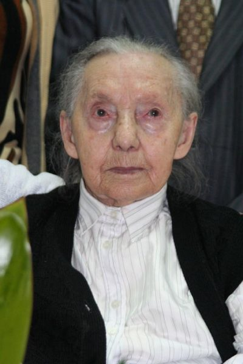
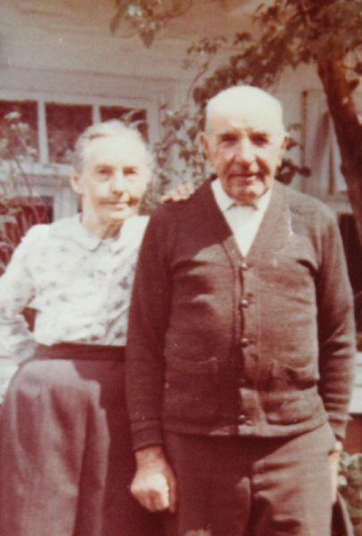
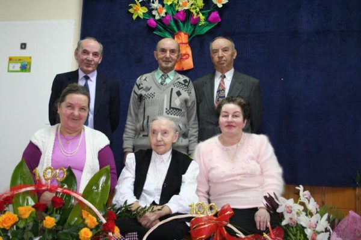
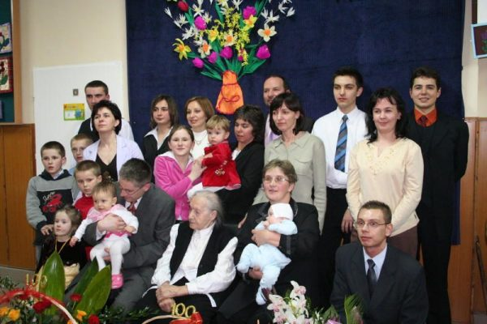
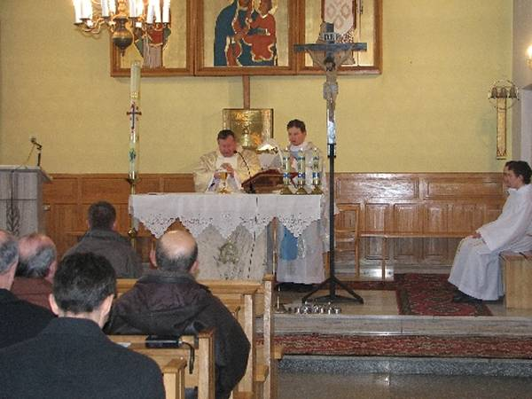
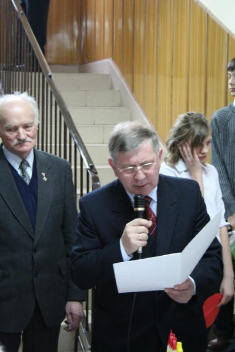
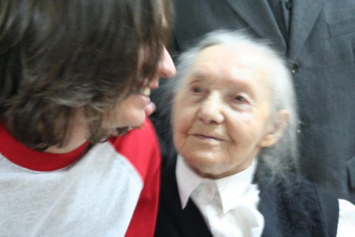
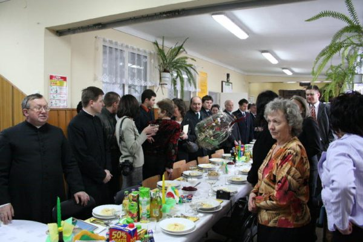
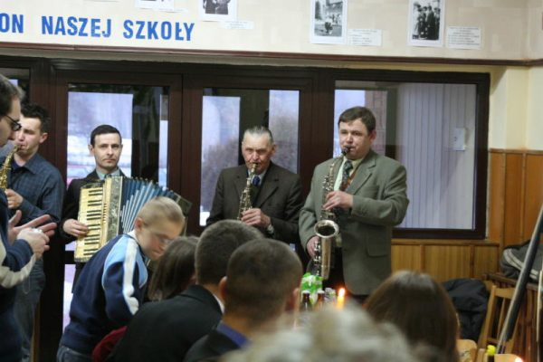
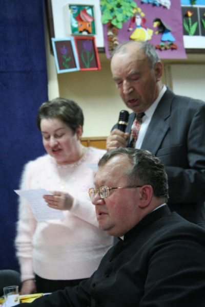

Jubileusz setnych urodzin Katarzyny Skrzyniarz - Żarówka 2006
Zdjęcia przesłane przez Jarosława Skrzyniarz
Pan Jarosław pisze: "Stuletnie urodziny Katarzyny Skrzyniarz - mojej Babci (ur. 07.03.1906).
Uroczystość stuletnich urodzin miała miejsce 11.03.06 w szkole w Żarówce, wsześniej odbyła się uroczysta
msza, gdzie był przeczytany specjalny list od biskupa. Były kwiaty, toasty, sztuczne ognie, gratylacje
od lokalnych władz i premiera RP. Babcia jest w bardzo dobrej jak na swój wiek kondycji. Ma bardzo dobrą
pamięć i chętnie opowiada różne stare dzieje."

Życzymy dostojnej jubilatce zdrowia oraz samych pogodnych dni. Katarzyna Skrzyniarz (z domu Głowacz)
całe życie mieszkała w Żarówce.

Katarzyna Skrzyniarz z mężem
Na uroczystości obecny był Prezes Związku Kombatantów RP i Byłych Więzniów Politycznych w Radomyślu
Wielkim Pan Jan Pinkowicz, który odczytał list gratulacyjny skierowany na ręce jubilatki oraz przekazał
dokumenty poświadczające pobyt jej męża w obozie niemieckim w Oświęcimiu.

Katarzyna Skrzyniarz z dziećmi

Katarzyna Skrzyniarz z wnukami i prawnukami.
Katarzyna Skrzyniarz cieszy się wychowała 3 synów, 2 córki oraz doczekała się 13 wnuczków i 14
prawnuczków.

Uroczysta msza w kaplicy w Żarowce pod przewodnictwem proboszcza parafii Zdziarzec ks. Eugeniusza
Habury z udziałem wikarego ks. Pawła Gwiżdża. Zdjecie ze strony http://www.radomyslwielki.pl/.

Podczas uroczystości Burmistrz Radomyśla Wielkiego Józef Rybiński odczytał list gratulacyjny od Premiera Rządu R.P. Pana Kazimierza Marcinkiewicza oraz złożył życzenia wraz z listem gratulacyjnym od władz samorządowych gminy Radomyśl Wielki.

Katarzyna Skrzyniarz z prawnukiem Danielem

Przy stole

Orkiestra

Wiersze.
Sztuczne ognie